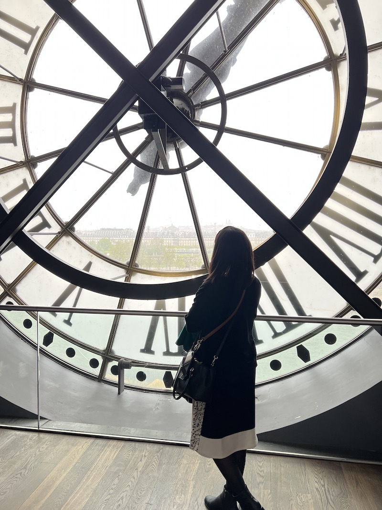
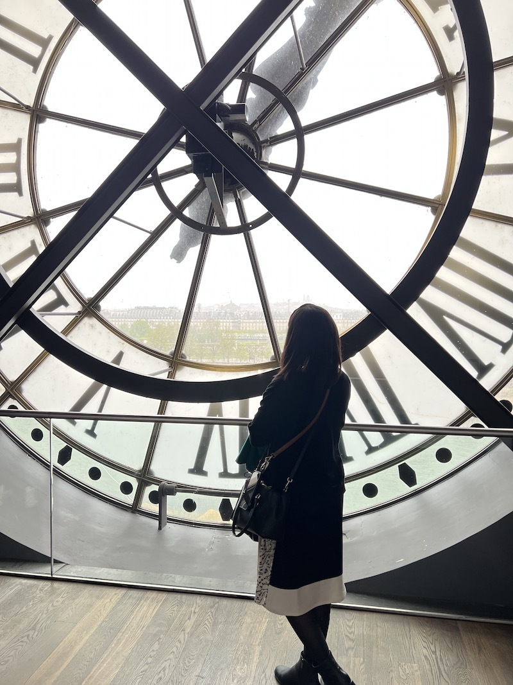

This was our last day with the tour group. We woke up early and headed right to the Musée d'Orsay, the famous
museum of impressionist paintings. The museum is in a beautiful former train station, right on the banks of the Seine.
This was our last day with the tour group. We woke up early and headed right to the Musée d'Orsay, the famous
museum of impressionist paintings. The museum is in a beautiful former train station, right on the banks of the Seine.

This was our last day with the tour group. We woke up early and headed right to the Musée d'Orsay, the famous
museum of impressionist paintings. The museum is in a beautiful former train station, right on the banks of the Seine.
We had an excellent guide for the Orsay Museum. She explained the history of impressionism: with the rise of photography, hyper-realistic painting was no longer as important, and artists had to reinvent themselves. The result was impressionism. The museum was incredibly crowded, but our guide took us directly to the important parts of the museum, including the original sculptures from the front of the Paris Opera.
 

After the museum, we were free for lunch, so we headed to our lunch reservation at Le Train Bleu, an incredibly ornate restaurant above Lyon Station with two Michelin stars. We had an excellent lunch, and had a crêpe Suzette (recommended by our French teacher), which the waiter flambéed right at our table.
We next visited the famous Galeries Lafayette department store, with its enormous metal-and-stained-glass dome. We had also ordered free tickets to their weekly fashion show before leaving for France, and we got there just in time to see it. We did some souvenir shopping in Galeries Lafayette on the top floor, where you could buy souvenirs and look down on the dome from above.
Then, we headed back to our hotel to get ready for our last group dinner. We walked as a group to the cozy bistro, Le Septième Vin. We all chatted about our week and exchanged contact information so we could stay in touch and share photos. Marie raised a toast to us, and we headed back to our hotel.
{% include next_button.html text="On y va! (\"Let's go!\")" url="side_trips.html" %}